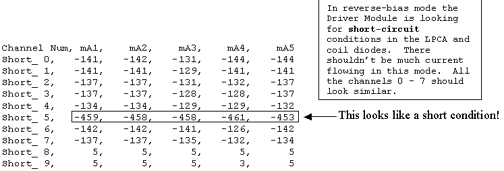
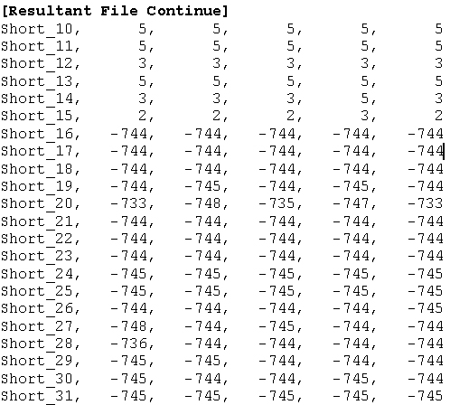

- 00000018WIA30733E20GYZ
- id_131063013.0
- Aug 29, 2019 1:38:42 AM
Case History: Faults When Using MRI PA Extrem SM Coil
Background: This is a 4-channel coil that uses channels 3 - 6. Here’s what the error log says:
|
|
Note the last line Mask of all failed channels: 0x20->. The last number is a hexidecimal representation of the failing channels. Convert 20 hex to binary. This is 00100000. The Least Significant Bit (LSB) on the far right signifies channel 1 and the MSB on the far left signifies channel 8. The ‘1’ marks a failed channel. We see from the message text and the binary code that channel 6 has failed. The system only reports the first channel that failed in the error log. So you’d expect to see the same error text as above if channel 6 and any of the other channels greater than 6 (i.e. 7 and/or 8) also failed. What would tell you that not only 6 but 7 and/or 8 failed would be the hexidecimal number reported in the last line. A 0x60 (ch 6 & 7), 0xA0 (ch 6 & 8), or 0xE0 (ch 6 - 8) value would tell you this. Convert the hex code to binary and you know which lines are failing. Remember that since each hexidecimal character can only represent up to 4 binary bits (hexidecimal A is decimal 15 is 1111 binary), and 1 bit is represented for each channel (8 bits total) in the LPCA, then two hexidecimal characters will always be needed to represent the Mask. This is true irrespective of whether the system has 8 or 4 receive channels in the MGD because all systems have 8 channels in the LPCA. If, for example, none of channels 5 - 8 have failed but channels 2 and 4 in the LPCA report a fault then the system will omit the leading 0 (zero) and just display the Mask value as 0xA. A Mask of 0xA converts to 00001010 binary. When reading the Mask value you have to remember that since two hexidecimal characters are required, because 1 bit is needed to represent each of the 8 channels in the LPCA, if only one hexidecimal value is displayed then there is a leading 0 (zero) ahead of the displayed value. The system doesn’t display a leading 0 (zero).
Situation: The FE ran Gather Load Data with the coil connected. The channels are listed counting from 0 (which is really physical channel 1) to 31 (really physical channel 32). We currently only use channels 0 (1) to 7 (8). The others are for future use. The resultant file, XXXX_mc.txt (where FE specifies XXXX in output box before test is run) was generated and stored in /usr/g/service/log. The resultant file is shown in Figure 1:



Epilogue: FE ran Gather Load Data test again, this time without any coil connected to the LPCA. No short-circuit condition was seen on channel 5 (6). Channels 0 (1) - 7 (8) all looked about the same. The LPCA electronics and everything else in the Multicoil TR biasing path appeared to be in good working order. The coil had a shorted channel 6. Replacing the coil fixed the problem. The same process of troubleshooting is used for troubleshooting open-circuit conditions except that now we would expect to see obvious problems in the Open_Section of the result file and perhaps less obvious signs of trouble in the Short_Section.